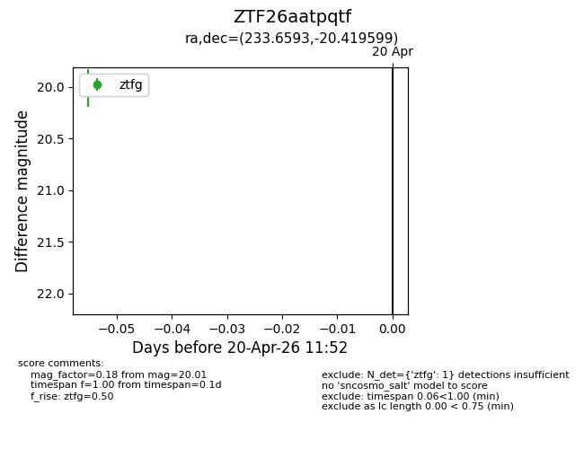
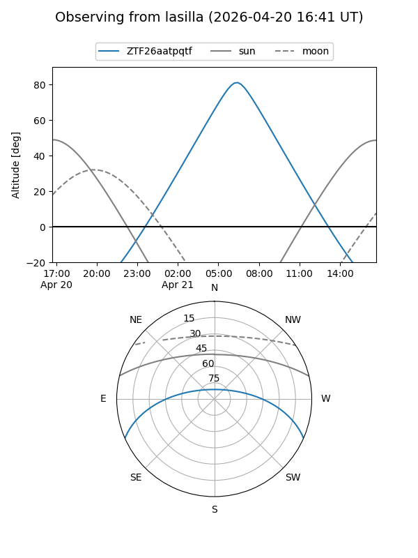
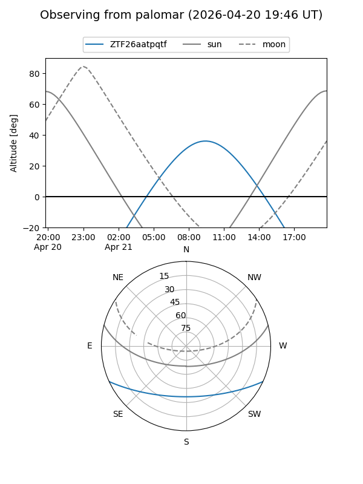

ZTF26aatpqtf
Target ZTF26aatpqtf at 2026-04-20 12:04
Aliases and brokers:
FINK: link
Lasair: link
ALeRCE: link
alt names
ZTF26aatpqtf (ztf,fink_ztf)
Coordinates:
equatorial (ra, dec) = 233.6593,-20.41960
equatorial (HMS+DMS) = 15:34:38.22,-20:25:10.56
galactic (l, b) = (346.9372,+28.18335)
Flags:
Photometry:
last ztfg=20.01
1 ztfg detections
Lightcurve

Visibility


Additional plots